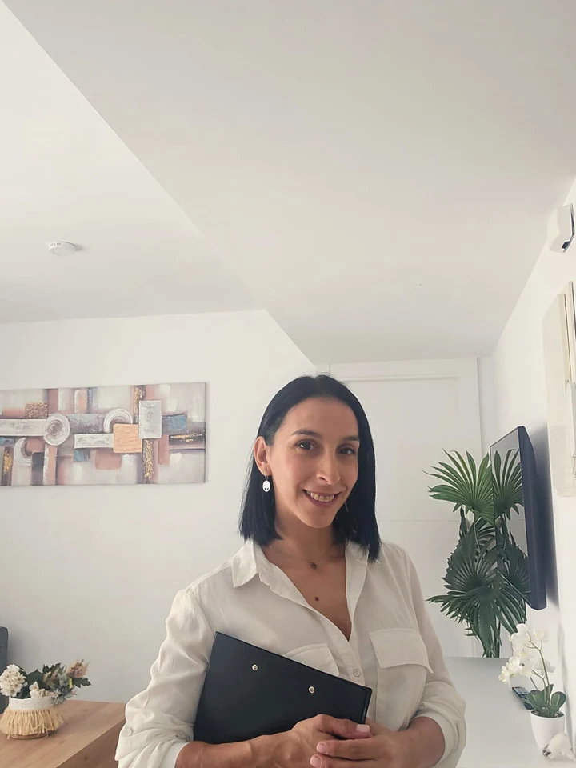
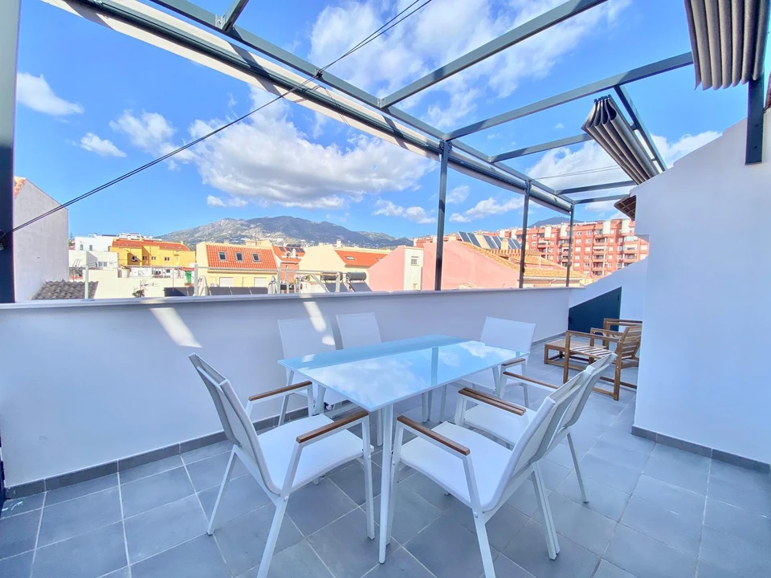
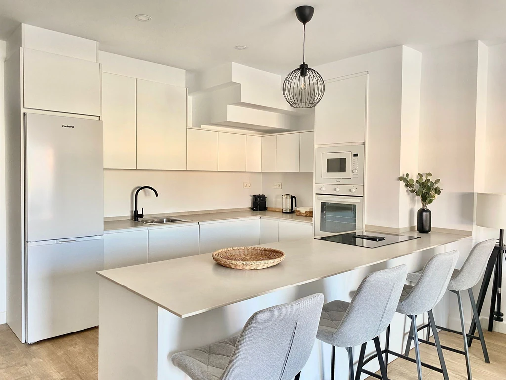

Hola, soy Georgina · Radiant Clean
Cuido tu propiedad como si fuese mía.
Acompaño a propietarios, gestores y equipos para que cada vivienda llegue impecable a la entrada, conserve su encanto temporada tras temporada y se sienta atendida con calma y criterio.

Georgina Cuesta
Fundadora · Limpieza profesional
Cuidado y excelencia en cada espacio
Cuando alguien de confianza se ocupa, la propiedad respira distinto.
Acompaño a propietarios, gestores e inmobiliarias que quieren viviendas cuidadas, entregas puntuales y la tranquilidad de saber que todo va a estar listo antes de cada llegada.
No me limito a limpiar lo visible: miro la vivienda con calma, detecto pequeños detalles y dejo cada espacio transmitiendo orden, cuidado y confianza.
Calendarios claros y trabajo preparado antes de que empiece la presión.
Rotación, horarios y prioridades coordinadas desde el inicio.Revisión de puntos críticos para mantener el nivel en cada propiedad.
Superficies, textiles, cocina, baño y presentación final revisados.Personal cualificado trabajando bajo supervisión directa de Georgina.
Un equipo alineado con un estándar claro y constante.Espacios listos para huéspedes, visitas, venta o alquiler.
La vivienda queda lista para entrar, enseñar o fotografiar.
Dirección personal
Georgina Cuesta
Quién está detrás
Soy Georgina. Trabajo cerca, con criterio y mucho cariño por los detalles.
Llevo años cuidando viviendas vacacionales y propiedades que necesitan estar siempre listas. Mi forma de trabajar se basa en la responsabilidad, la organización y la atención al detalle, y en estar yo presente cuando hace falta.
Superviso cada proceso de cerca y mantengo un estándar claro: que la persona que llega a la vivienda — propietario, huésped o quien venga a verla — sienta desde el primer paso que hay alguien detrás cuidándola.
La idea es sencilla: que puedas dejarme las llaves con confianza y saber que estoy mirando la vivienda con criterio, calma y cariño por los detalles.
+16 años de experiencia
Málaga y alrededores
Equipo formado por mí
Servicios
Cuatro líneas de servicio para propiedades que deben estar impecables.

01
Limpieza y mantenimiento de viviendas vacacionales
Limpieza visible, revisión de detalles y conservación del espacio a lo largo del tiempo. Cada entrada queda preparada para huéspedes y propietarios.
Ver servicio
02
Complejos de apartamentos turísticos
Organización para altos volúmenes de trabajo, entregas puntuales y resultados homogéneos.
Organizar complejo
03
Limpieza post-obra
Análisis previo, cuidado de materiales y limpieza final para dejar el inmueble listo.
Ver servicio
04
Puesta a punto para venta o alquiler
Limpieza profunda y revisión completa para mejorar la primera impresión en visitas.
Ver servicioSistema Radiant
Lo que se revisa cuando nadie mira es lo que marca la diferencia.
Cajones, superficies, baños, cocina, textiles, terraza, acabados y pequeños signos de desgaste. El servicio está pensado para que el inmueble se mantenga bonito, funcional y rentable.
Quiero organizar mis propiedades
Checklist operativo
Antes de entregar
- Revisión de estancia completa Dormitorios, salón, zonas de paso y exteriores.
- Cuidado de superficies y acabados Atención a materiales, marcas y pequeños signos de uso.
- Control de cocina, baño y textiles Puntos que influyen directamente en la confianza del huésped.
- Detección de incidencias visibles Comunicación temprana para evitar sorpresas de última hora.
- Presentación final para huéspedes o visitas Orden visual antes de entregar, enseñar o fotografiar.
Método de trabajo
Del primer contacto a la entrega impecable.
- Revisión inicial Estado del inmueble, objetivos del propietario y nivel de rotación. Se define el punto de partida para trabajar sin improvisación.
- Plan de limpieza Prioridades, tiempos, equipo asignado y puntos críticos de control. Cada tarea se ordena según el uso real de la propiedad.
- Ejecución profesional Trabajo ordenado, cuidado de superficies y atención a acabados. La limpieza avanza con criterio, no solo con rapidez.
- Supervisión directa Georgina mantiene el estándar y revisa que cada espacio quede listo. La calidad se controla antes de dar el servicio por cerrado.
- Entrega impecable Vivienda preparada para huéspedes, visitas, venta o alquiler. El resultado final transmite cuidado desde el primer vistazo.
Antes / después
Misma vivienda, dos formas de prepararla.
A la izquierda, lo que se entrega "por inercia": sin mirada, sin criterio. A la derecha, una vivienda preparada con el método Radiant. Mueve el divisor para ver el contraste.
Antes
Después
Foto real de uno de los apartamentos que cuido. Pasa el comparador a izquierda o derecha para ver el contraste.
Formación Radiant
para equipos y empresasEnseño la forma de trabajar que en este sector nadie te enseña.
El gran problema de la limpieza profesional no son las manos: es la falta de formación. Equipos sin checklist, sin briefing, sin criterio para revisar lo importante.
Después de años montando sistemas propios, formo a empresas de limpieza, equipos internos de gestores y a quien quiere arrancar su proyecto con cabeza. Te enseño mi metodología, te dejo plantillas reales y te acompaño hasta que el equipo entrega solo, sin que tengas que estar encima.
- Para empresas que quieren elevar su estándar.
- Para gestores que necesitan ordenar a su equipo de limpieza.
- Para quien quiere arrancar su propio negocio del sector.
Qué aporta Radiant Clean
Más tranquilidad para quien gestiona. Mejor experiencia para quien entra.
El estándar no está solo en lo que se ve a primera vista. Está en abrir cajones, revisar detalles, detectar incidencias y mantener una vivienda siempre preparada.
Propietarios
Delegan con confianza y reducen la carga de la operativa diaria.
Menos seguimiento diario, más tranquilidad.Gestores
Ganan orden, tiempos claros y un estándar que se mantiene.
Más control cuando hay varias viviendas en movimiento.Huéspedes
Encuentran espacios cuidados que elevan la experiencia desde la llegada.
Una entrada limpia cambia la percepción de toda la estancia.Inmobiliarias
Presentan viviendas con más presencia, orden y confianza visual.
Mejor primera impresión en fotos, visitas y entregas.Reels Radiant Clean
Una forma más visual de entender el cuidado real de una propiedad.
Selección de contenidos donde Georgina explica qué hay detrás de una vivienda bien mantenida: coordinación, revisión y detalles que elevan la experiencia antes de cada llegada.
Gestión integral
Gestionar una propiedad no es solo alquilar.
Coordinar, revisar y garantizar que todo esté al nivel esperado define la experiencia antes de cada llegada.
Detalles que cuentan
No todo es visible a simple vista.
Los detalles que muchos no revisan son los que realmente marcan la diferencia en el nivel de una propiedad.
Confianza para propietarios
No es solo limpieza. Es tranquilidad.
Mantenimiento, control constante y pequeños detalles separan una propiedad que se alquila de una que ofrece experiencia.

Confianza real
Personas que ya me han dejado las llaves.
Pequeñas frases de propietarios, gestores y equipos con los que trabajo. Lo más importante para mí es que se note la tranquilidad cuando hablan de la vivienda.
“La diferencia con Georgina es que de verdad mira la casa. Llegan los huéspedes y la vivienda transmite cuidado desde la puerta. Para mí es invaluable.”
“Tenemos varios apartamentos en alta rotación y desde que coordinamos con ella las entregas no fallan. Nos ha ordenado el equipo y las valoraciones lo notan.”
“La formación con Georgina nos cambió el chip. Trabajamos con checklist y briefing y ya no repito instrucciones cada semana. Mi equipo lo agradece.”
Preguntas frecuentes
Lo que casi todo el mundo me pregunta antes de empezar.
Si tienes una duda concreta que no aparece aquí, escríbeme directamente. Prefiero responderte yo a darte una respuesta automática.
Escribir a Georgina por WhatsApp¿En qué zonas trabajas?
Estoy en Fuengirola y cubro toda la Costa del Sol y alrededores: Málaga, Mijas, Benalmádena, Marbella y municipios cercanos. Si tu propiedad está fuera, escríbeme y lo valoramos.
¿Trabajas sola o con equipo?
Cuento con un equipo formado por mí. Yo organizo, superviso y reviso. Cada miembro trabaja con el mismo checklist, así que el estándar no depende de quién entre a la vivienda.
¿Cómo se contrata el servicio recurrente?
Lo más sencillo es que me escribas por WhatsApp con los datos básicos (zona, tipo de propiedad, rotación). Visitamos la vivienda, ajustamos prioridades y te paso una propuesta clara antes de empezar.
¿La formación es online o presencial?
Presencial, en una vivienda real. Es la única manera de enseñar a mirar de verdad. Después del primer bloque te dejo plantillas y te acompaño en remoto durante las primeras semanas.
¿Atiendes urgencias o entregas de última hora?
Sí, dentro de mi disponibilidad. Si trabajamos de forma recurrente, las urgencias entran dentro del calendario. Para nuevos contactos hago lo posible si encaja en el día.
Hablamos
Cuéntame qué necesitas y lo miramos con calma.
Escríbeme contándome qué tipo de propiedad tienes, la zona y cómo está organizada hoy. Cada propiedad es distinta, así que prefiero preparar una propuesta pensada para lo que tú necesitas.
— Georgina
640 932 249 info.radiantclean@gmail.com Costa del Sol · Fuengirola y alrededores